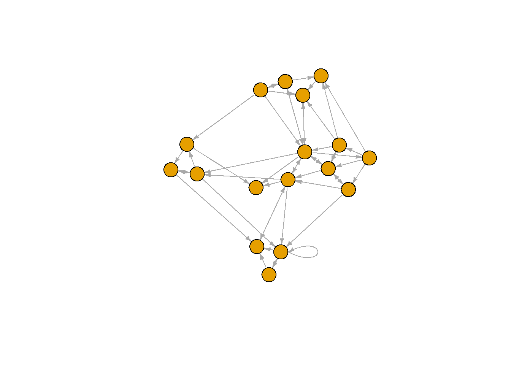
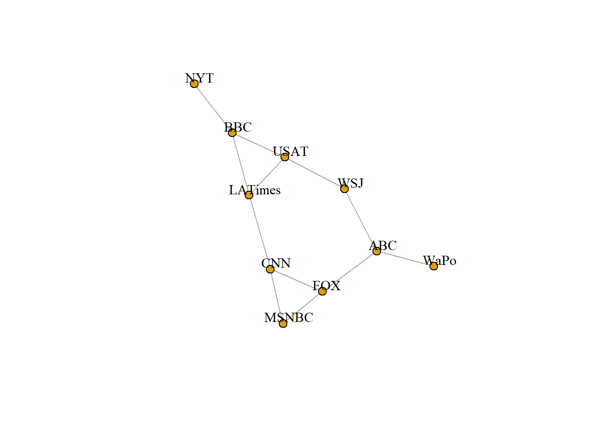
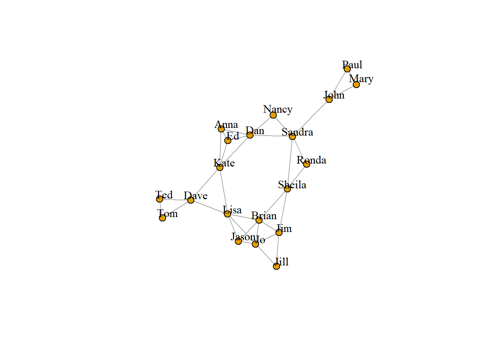

5 네트워크를 igraph 개체로 변환하기
원 데이터를 igraph 네트워크 개체로 변환하면서 시작한다. 여기서는 d와 vertices라는 두 개의 데이터 프레임을 취하는 graph.data.frame() 함수를 사용한다. 이 함수의 주요 인수는 다음과 같다.
- d는 네트워크의 에지들을 서술한다. 첫 두 개의 열은 각 에지의 소스와 대상 노드의 ID 들이다. 다음의 열들은 에지 속성(
weight,type,label, 또는 그 밖의 속성)들이다. - vertices 는 노드 ID들의 열로 시작한다. 이어지는 열들은 노드의 속성들로 해석된다.
5.1 데이터 세트 1
## [1] "igraph"## IGRAPH 1602b5e DNW- 17 49 --
## + attr: name (v/c), media (v/c), media.type (v/n), type.label (v/c),
## | audience.size (v/n), type (e/c), weight (e/n)
## + edges from 1602b5e (vertex names):
## [1] s01->s02 s01->s03 s01->s04 s01->s15 s02->s01 s02->s03 s02->s09 s02->s10
## [9] s03->s01 s03->s04 s03->s05 s03->s08 s03->s10 s03->s11 s03->s12 s04->s03
## [17] s04->s06 s04->s11 s04->s12 s04->s17 s05->s01 s05->s02 s05->s09 s05->s15
## [25] s06->s06 s06->s16 s06->s17 s07->s03 s07->s08 s07->s10 s07->s14 s08->s03
## [33] s08->s07 s08->s09 s09->s10 s10->s03 s12->s06 s12->s13 s12->s14 s13->s12
## [41] s13->s17 s14->s11 s14->s13 s15->s01 s15->s04 s15->s06 s16->s06 s16->s17
## [49] s17->s04우리는 다음과 같이 노드, 에지 그리고 속성들에 쉽게 접근할 수 있다.
## + 49/49 edges from 1602b5e (vertex names):
## [1] s01->s02 s01->s03 s01->s04 s01->s15 s02->s01 s02->s03 s02->s09 s02->s10
## [9] s03->s01 s03->s04 s03->s05 s03->s08 s03->s10 s03->s11 s03->s12 s04->s03
## [17] s04->s06 s04->s11 s04->s12 s04->s17 s05->s01 s05->s02 s05->s09 s05->s15
## [25] s06->s06 s06->s16 s06->s17 s07->s03 s07->s08 s07->s10 s07->s14 s08->s03
## [33] s08->s07 s08->s09 s09->s10 s10->s03 s12->s06 s12->s13 s12->s14 s13->s12
## [41] s13->s17 s14->s11 s14->s13 s15->s01 s15->s04 s15->s06 s16->s06 s16->s17
## [49] s17->s04## + 17/17 vertices, named, from 1602b5e:
## [1] s01 s02 s03 s04 s05 s06 s07 s08 s09 s10 s11 s12 s13 s14 s15 s16 s17## [1] "hyperlink" "hyperlink" "hyperlink" "mention" "hyperlink" "hyperlink"
## [7] "hyperlink" "hyperlink" "hyperlink" "hyperlink" "hyperlink" "hyperlink"
## [13] "mention" "hyperlink" "hyperlink" "hyperlink" "mention" "mention"
## [19] "hyperlink" "mention" "mention" "hyperlink" "hyperlink" "mention"
## [25] "hyperlink" "hyperlink" "mention" "mention" "mention" "hyperlink"
## [31] "mention" "hyperlink" "mention" "mention" "mention" "hyperlink"
## [37] "mention" "hyperlink" "mention" "hyperlink" "mention" "mention"
## [43] "mention" "hyperlink" "hyperlink" "hyperlink" "hyperlink" "mention"
## [49] "hyperlink"## [1] "NY Times" "Washington Post" "Wall Street Journal"
## [4] "USA Today" "LA Times" "New York Post"
## [7] "CNN" "MSNBC" "FOX News"
## [10] "ABC" "BBC" "Yahoo News"
## [13] "Google News" "Reuters.com" "NYTimes.com"
## [16] "WashingtonPost.com" "AOL.com"이제 igraph 네트워크 개체가 마련되었다. 이를 그림으로 시각해 보기로 한다.

그렇게 멋져 보이지는 않는다. 그래프 내의 loop를 제거해서 수정해 보기로 한다.
simplify() 함수를 이용하여 simplify(net, edge.attr.comb=list(weight="sum","ignore"))와 같은 명령을 이용하여 복수 개의 에지들의 가중치를 합함으로써 복수 개의 에지들을 결합할 수 있음을 알게 될 것이다. 문제는 이것이 복수의 에지 유형들(이 데이터에서는 “hyperlinks”와 “mentions”)도 결합하게 된다는 것이다.
이 유형들이 필요하다면, igraph 네트워크로 부터 에지 목록(edge list)이나 인접 행렬(adjacent matrix)을 추출할 수 있다.
## [,1] [,2]
## [1,] "s01" "s02"
## [2,] "s01" "s03"
## [3,] "s01" "s04"
## [4,] "s01" "s15"
## [5,] "s02" "s01"
## [6,] "s02" "s03"
## [7,] "s02" "s09"
## [8,] "s02" "s10"
## [9,] "s03" "s01"
## [10,] "s03" "s04"
## [11,] "s03" "s05"
## [12,] "s03" "s08"
## [13,] "s03" "s10"
## [14,] "s03" "s11"
## [15,] "s03" "s12"
## [16,] "s04" "s03"
## [17,] "s04" "s06"
## [18,] "s04" "s11"
## [19,] "s04" "s12"
## [20,] "s04" "s17"
## [21,] "s05" "s01"
## [22,] "s05" "s02"
## [23,] "s05" "s09"
## [24,] "s05" "s15"
## [25,] "s06" "s16"
## [26,] "s06" "s17"
## [27,] "s07" "s03"
## [28,] "s07" "s08"
## [29,] "s07" "s10"
## [30,] "s07" "s14"
## [31,] "s08" "s03"
## [32,] "s08" "s07"
## [33,] "s08" "s09"
## [34,] "s09" "s10"
## [35,] "s10" "s03"
## [36,] "s12" "s06"
## [37,] "s12" "s13"
## [38,] "s12" "s14"
## [39,] "s13" "s12"
## [40,] "s13" "s17"
## [41,] "s14" "s11"
## [42,] "s14" "s13"
## [43,] "s15" "s01"
## [44,] "s15" "s04"
## [45,] "s15" "s06"
## [46,] "s16" "s06"
## [47,] "s16" "s17"
## [48,] "s17" "s04"## 17 x 17 sparse Matrix of class "dgCMatrix"## [[ suppressing 17 column names 's01', 's02', 's03' ... ]]##
## s01 . 22 22 21 . . . . . . . . . . 20 . .
## s02 23 . 21 . . . . . 1 5 . . . . . . .
## s03 21 . . 22 1 . . 4 . 2 1 1 . . . . .
## s04 . . 23 . . 1 . . . . 22 3 . . . . 2
## s05 1 21 . . . . . . 2 . . . . . 21 . .
## s06 . . . . . . . . . . . . . . . 21 21
## s07 . . 1 . . . . 22 . 21 . . . 4 . . .
## s08 . . 2 . . . 21 . 23 . . . . . . . .
## s09 . . . . . . . . . 21 . . . . . . .
## s10 . . 2 . . . . . . . . . . . . . .
## s11 . . . . . . . . . . . . . . . . .
## s12 . . . . . 2 . . . . . . 22 22 . . .
## s13 . . . . . . . . . . . 21 . . . . 1
## s14 . . . . . . . . . . 1 . 21 . . . .
## s15 22 . . 1 . 4 . . . . . . . . . . .
## s16 . . . . . 23 . . . . . . . . . . 21
## s17 . . . 4 . . . . . . . . . . . . .또는 데이터 프레임으로 노드와 에지를 설명할 수 있다.
## from to type weight
## 1 s01 s02 hyperlink 22
## 2 s01 s03 hyperlink 22
## 3 s01 s04 hyperlink 21
## 4 s01 s15 mention 20
## 5 s02 s01 hyperlink 23
## 6 s02 s03 hyperlink 21
## 7 s02 s09 hyperlink 1
## 8 s02 s10 hyperlink 5
## 9 s03 s01 hyperlink 21
## 10 s03 s04 hyperlink 22
## 11 s03 s05 hyperlink 1
## 12 s03 s08 hyperlink 4
## 13 s03 s10 mention 2
## 14 s03 s11 hyperlink 1
## 15 s03 s12 hyperlink 1
## 16 s04 s03 hyperlink 23
## 17 s04 s06 mention 1
## 18 s04 s11 mention 22
## 19 s04 s12 hyperlink 3
## 20 s04 s17 mention 2
## 21 s05 s01 mention 1
## 22 s05 s02 hyperlink 21
## 23 s05 s09 hyperlink 2
## 24 s05 s15 mention 21
## 25 s06 s16 hyperlink 21
## 26 s06 s17 mention 21
## 27 s07 s03 mention 1
## 28 s07 s08 mention 22
## 29 s07 s10 hyperlink 21
## 30 s07 s14 mention 4
## 31 s08 s03 hyperlink 2
## 32 s08 s07 mention 21
## 33 s08 s09 mention 23
## 34 s09 s10 mention 21
## 35 s10 s03 hyperlink 2
## 36 s12 s06 mention 2
## 37 s12 s13 hyperlink 22
## 38 s12 s14 mention 22
## 39 s13 s12 hyperlink 21
## 40 s13 s17 mention 1
## 41 s14 s11 mention 1
## 42 s14 s13 mention 21
## 43 s15 s01 hyperlink 22
## 44 s15 s04 hyperlink 1
## 45 s15 s06 hyperlink 4
## 46 s16 s06 hyperlink 23
## 47 s16 s17 mention 21
## 48 s17 s04 hyperlink 4## name media media.type type.label audience.size
## s01 s01 NY Times 1 Newspaper 20
## s02 s02 Washington Post 1 Newspaper 25
## s03 s03 Wall Street Journal 1 Newspaper 30
## s04 s04 USA Today 1 Newspaper 32
## s05 s05 LA Times 1 Newspaper 20
## s06 s06 New York Post 1 Newspaper 50
## s07 s07 CNN 2 TV 56
## s08 s08 MSNBC 2 TV 34
## s09 s09 FOX News 2 TV 60
## s10 s10 ABC 2 TV 23
## s11 s11 BBC 2 TV 34
## s12 s12 Yahoo News 3 Online 33
## s13 s13 Google News 3 Online 23
## s14 s14 Reuters.com 3 Online 12
## s15 s15 NYTimes.com 3 Online 24
## s16 s16 WashingtonPost.com 3 Online 28
## s17 s17 AOL.com 3 Online 335.2 데이터 세트 2
앞에서 살펴본 바와 같이, 이번에는 네트워크의 에지들이 행렬 형태로 되어 있다. 이러한 데이터를 graph_from_incidence_matrix() 함수를 이용하여, 그래프 개체로 읽어 들일 수 있다. igraph에서 이분할 네트워크는 정점들에 대해 한 모드에서는 FALSE(또는 0) 값을 갖고 또 다른 모드에서는 TRUE(또는 1)값을 갖는 type이라 불리는 속성을 갖는다.
## id media media.type media.name audience.size
## 1 s01 NYT 1 Newspaper 20
## 2 s02 WaPo 1 Newspaper 25
## 3 s03 WSJ 1 Newspaper 30
## 4 s04 USAT 1 Newspaper 32
## 5 s05 LATimes 1 Newspaper 20
## 6 s06 CNN 2 TV 56## U01 U02 U03 U04 U05 U06 U07 U08 U09 U10 U11 U12 U13 U14 U15 U16 U17 U18 U19
## s01 1 1 1 0 0 0 0 0 0 0 0 0 0 0 0 0 0 0 0
## s02 0 0 0 1 1 0 0 0 0 0 0 0 0 0 0 0 0 0 0
## s03 0 0 0 0 0 1 1 1 1 0 0 0 0 0 0 0 0 0 0
## s04 0 0 0 0 0 0 0 0 1 1 1 0 0 0 0 0 0 0 0
## s05 0 0 0 0 0 0 0 0 0 0 1 1 1 0 0 0 0 0 0
## s06 0 0 0 0 0 0 0 0 0 0 0 0 1 1 0 0 1 0 0
## U20
## s01 0
## s02 1
## s03 0
## s04 0
## s05 0
## s06 0##
## FALSE TRUE
## 10 201 모드 네트워크를 igraph 개체로 변환하기 위해서는 대신에 graph_from_adjacency_matrix() 함수를 사용한다.
- [참고자료 : 1-mode 네트워크 : https://yjkim81.wordpress.com/network-data_1mode/]
또한 2 모드 네트워크에 대한 이분할 프로젝션을 쉽게 생성할 수 있다. (공동 멤버십은 네트워크 행렬과 그 전치 행렬을 곱함으로써 또는 igraph의 bipartite.projection() 함수를 사용함으로써 쉽게 계산할 수 있다.)
- [참고자료 : 2-mode 네트워크 : https://yjkim81.wordpress.com/network-data-2-mode/]
또한 손으로도 프로젝션을 계산할 수 있다.
## s01 s02 s03 s04 s05 s06 s07 s08 s09 s10
## s01 3 0 0 0 0 0 0 0 0 1
## s02 0 3 0 0 0 0 0 0 1 0
## s03 0 0 4 1 0 0 0 0 1 0
## s04 0 0 1 3 1 0 0 0 0 1
## s05 0 0 0 1 3 1 0 0 0 1
## s06 0 0 0 0 1 3 1 1 0 0
## s07 0 0 0 0 0 1 3 1 0 0
## s08 0 0 0 0 0 1 1 4 1 0
## s09 0 1 1 0 0 0 0 1 3 0
## s10 1 0 0 1 1 0 0 0 0 2## U01 U02 U03 U04 U05 U06 U07 U08 U09 U10 U11 U12 U13 U14 U15 U16 U17 U18 U19
## U01 2 1 1 0 0 0 0 0 0 0 1 0 0 0 0 0 0 0 0
## U02 1 1 1 0 0 0 0 0 0 0 0 0 0 0 0 0 0 0 0
## U03 1 1 1 0 0 0 0 0 0 0 0 0 0 0 0 0 0 0 0
## U04 0 0 0 1 1 0 0 0 0 0 0 0 0 0 0 0 0 0 0
## U05 0 0 0 1 1 0 0 0 0 0 0 0 0 0 0 0 0 0 0
## U06 0 0 0 0 0 2 1 1 1 0 0 0 0 0 0 0 0 0 1
## U07 0 0 0 0 0 1 1 1 1 0 0 0 0 0 0 0 0 0 0
## U08 0 0 0 0 0 1 1 1 1 0 0 0 0 0 0 0 0 0 0
## U09 0 0 0 0 0 1 1 1 2 1 1 0 0 0 0 0 0 0 0
## U10 0 0 0 0 0 0 0 0 1 1 1 0 0 0 0 0 0 0 0
## U11 1 0 0 0 0 0 0 0 1 1 3 1 1 0 0 0 0 0 0
## U12 0 0 0 0 0 0 0 0 0 0 1 1 1 0 0 0 0 0 0
## U13 0 0 0 0 0 0 0 0 0 0 1 1 2 1 0 0 1 0 0
## U14 0 0 0 0 0 0 0 0 0 0 0 0 1 2 1 1 1 0 0
## U15 0 0 0 0 0 0 0 0 0 0 0 0 0 1 1 1 0 0 0
## U16 0 0 0 0 0 0 0 0 0 0 0 0 0 1 1 2 1 1 1
## U17 0 0 0 0 0 0 0 0 0 0 0 0 1 1 0 1 2 1 1
## U18 0 0 0 0 0 0 0 0 0 0 0 0 0 0 0 1 1 1 1
## U19 0 0 0 0 0 1 0 0 0 0 0 0 0 0 0 1 1 1 2
## U20 0 0 0 1 1 1 0 0 0 0 0 0 0 0 0 0 0 0 1
## U20
## U01 0
## U02 0
## U03 0
## U04 1
## U05 1
## U06 1
## U07 0
## U08 0
## U09 0
## U10 0
## U11 0
## U12 0
## U13 0
## U14 0
## U15 0
## U16 0
## U17 0
## U18 0
## U19 1
## U20 2plot(net2.bp$proj1, vertex.label.color="black", vertex.label.dist=1,
vertex.size=7, vertex.label=nodes2$media[!is.na(nodes2$media.type)])
plot(net2.bp$proj2, vertex.label.color="black", vertex.label.dist=1,
vertex.size=7, vertex.label=nodes2$media[ is.na(nodes2$media.type)])